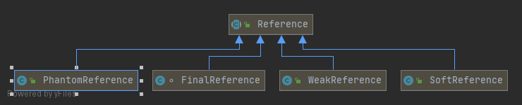

数据类型 Java里将数据类型分为了基本数据类型和引用数据类型，基本数据类型包含: byte、char、short、int、float、double、long、boolean，剩下的都是引用类型。最常用的就是String字符串：
基本数据类型的值都是直接保存在变量中的(一个变量一个值，可以体会到类似Integer.valueof缓存值的用意)
而引用类型的变量类似于C语言的指针，它内部存储一个“地址”，指向某个对象在内存的位置
对于基本类型变量num，赋值运算符将会直接修改变量的值，原来的数据将被覆盖掉，被替换为新的值。
对于引用类型变量str，赋值运算符只会改变变量中所保存的对象的地址 信息，原来对象的地址被覆盖掉，重新写入新对象的地址数据。但原来的对象本身并不会被改变 ，只是不再被任何引用所指向的对象，即“垃圾对象”，后续会被垃圾回收器回收。
引用类型的变量可以指向一个空值null，它表示不存在，即该变量不指向任何对象
基本类型的变量是“持有”某个数值，引用类型的变量是“指向”某个对象
1 2 3 4 5 6 7 8 9 10 11 12 13 14 15 16 17 18 19 20 21 22 23 24 25 26 27 28 29 30 31 32 33 public static void main(String[] args) { int num = 1; int num2 = num; System.out.println("num修改前: " + num + " num2: " + num2); num = 2; System.out.println("num修改后: " + num + " num2: " + num2); System.out.println("======================="); StringBuilder sb = new StringBuilder("hello"); StringBuilder sb2 = sb; System.out.println("sb修改前: " + sb.toString() + " sb2: " + sb2.toString()); sb.append(" world"); System.out.println("sb修改后: " + sb.toString() + " sb2: " + sb2.toString()); System.out.println("======================="); String str = "hello"; String str2 = str; System.out.println("str修改前: " + str + " str2: " + str2); str = "world"; System.out.println("str修改后: " + str + " str2: " + str2); } //输出 num修改前: 1 num2: 1 num修改后: 2 num2: 1 ======================= sb修改前: hello sb2: hello sb修改后: hello world sb2: hello world ======================= str修改前: hello str2: hello str修改后: world str2: hello
这里可以联想下String的不可变性
参数传递 Java的参数传递为值传递。也就是说，当我们传递一个参数时，方法将获得该参数的一个拷贝:
基本类型变量的值传递，意味着变量本身被复制，并传递给Java方法。Java方法对变量的修改不会影响到原变量。
引用的值传递，意味着对象的地址被复制，并传递给Java方法。Java方法根据该引用的访问将会影响对象
1 2 3 4 5 6 7 8 9 10 11 12 13 14 15 16 17 18 19 20 21 22 23 24 25 26 27 28 29 30 31 32 33 34 35 36 37 38 39 40 41 42 43 44 45 46 47 48 49 50 51 52 53 54 55 56 57 58 59 60 public class Test { public static void main(String[] args) { int num = 1; System.out.println("num修改前: " + num); testIntArg(num); System.out.println("num修改后: " + num); System.out.println("======================="); StringBuilder sb = new StringBuilder("hello"); System.out.println("sb修改前: " + sb.toString()); testSbArg(sb); System.out.println("sb修改后: " + sb.toString()); System.out.println("======================="); String str = "hello"; System.out.println("str修改前: " + str); testStrArg(str); System.out.println("str修改后: " + str); } public static void testIntArg(int num) { //基本数据类型，参数传递后，方法内部修改不会影响原有参数 System.out.println("testIntArg, num修改前: " + num); num = 2; System.out.println("testIntArg,num修改后: " + num); } public static void testSbArg(StringBuilder sb) { //引用数据类型，参数传递后，除非重新new对象，否则方法内部修改会影响原有参数 System.out.println("testSbArg, sb修改前: " + sb.toString()); sb.append(" world"); System.out.println("testSbArg, sb修改后: " + sb.toString()); } public static void testStrArg(String str) { System.out.println("testStrArg, str修改前: " + str); //String 这里就相当于new String()了 str = "hello world"; System.out.println("testStrArg, str修改后: " + str); } } //输出 num修改前: 1 testIntArg, num修改前: 1 testIntArg,num修改后: 2 num修改后: 1 ======================= sb修改前: hello testSbArg, sb修改前: hello testSbArg, sb修改后: hello world sb修改后: hello world ======================= str修改前: hello testStrArg, str修改前: hello testStrArg, str修改后: hello world str修改后: hello
引用类型 Java提供了四种引用类型：强引用(FinalReference)、软引用(SoftReference)、弱引用(WeakReference)、虚引用(PhantomReference)

除了强引用(FinalReference)其他都是public修饰的，可以在我们的程序里直接使用，事实如果我们直接定义变量等某个对象时，默认就是对这个对象的强引用
强引用 强引用特点：
强引用可以直接访问目标对象
只要有引用变量存在，垃圾回收器永远不会回收。JVM即使抛出OOM异常，也不会回收强引用所指向的对象。
强引用是使用最普遍的引用。如果一个对象具有强引用，那么垃圾回收器绝不会回收 它。例如:StringBuilder sb = new StringBuilder(“test”);变量str指向StringBuffer实例所在的堆空间，通过str可以操作该对象。
在不用对象的时将引用赋值为 null，能够帮助垃圾回收器回收对象(具体回收时机还是要看垃圾收集策略)。比如 ArrayList 的 clear() 方法实现：
1 2 3 4 5 6 public void clear() { modCount++; final Object[] es = elementData; for (int to = size, i = size = 0; i < to; i++) es[i] = null; }
软引用 软引用是用来描述一些有用但并不是必需的对象。对于软引用关联着的对象，在系统将要发生内存溢出异常之前，将会把这些对象列进回首范围之中进行第二次回收。如果这次回收还没有足够的内存，才会抛出内存溢出异常。
因此，软引用可以用于实现对内存敏感的高速缓存 : 在内存足够的情况下直接通过软引用取值，无需从的真实来源查询数据，提升速度；当内存不足时，自动删除这部分缓存数据，从真正的来源查询这些数据。
软引用特点是它的一个实例保存对一个Java对象的软引用，该软引用的存在不妨碍垃圾收集线程对该Java对象的回收：
在垃圾线程对这个Java对象回收前，SoftReference类所提供的get()方法返回Java对象的强引用
在垃圾线程回收该Java对象之后，get()方法将返回null
软引用对象是在jvm内存不够的时候才会被回收
1 2 3 4 5 6 7 8 9 10 11 12 13 14 15 16 17 18 19 20 21 22 23 24 public class SoftReferenceTest { static class HeapObject { byte[] bs = new byte[1024 * 1024]; } public static void main(String[] args) { SoftReference<HeapObject> softReference = new SoftReference<>(new HeapObject()); List<HeapObject> list = new ArrayList<>(); while (true) { if (softReference.get() != null) { //模拟消耗内存 list.add(new HeapObject()); System.out.println("list.add"); } else { System.out.println("---------软引用已被回收---------"); break; } System.gc(); } } }
实现简易版缓存
1 2 3 4 5 6 7 8 9 10 11 12 13 14 15 16 17 18 19 20 21 22 23 24 25 26 27 28 29 30 31 32 33 34 35 /** * 简易版软引用实现的缓存 */ public class SoftReferenceCache<K, V> { private final HashMap<K, SoftReference<V>> mCache; public SoftReferenceCache() { mCache = new HashMap<K, SoftReference<V>>(); } /** * 将对象放进缓存中，这个对象可以在GC发生时被回收 * @param key key的值. * @param value value的值型. */ public void put(K key, V value) { mCache.put(key, new SoftReference<V>(value)); } /** * 从缓存中获取value * @param key * @return 如果找到的话返回value，如果被回收或者没有就返回null */ public V get(K key) { V value = null; SoftReference<V> reference = mCache.get(key); if (reference != null) { value = reference.get(); } return value; } }
弱引用 弱引用是一种比软引用较弱的引用类型。在系统GC时，只要发现弱引用，不管系统堆空间是否足够，都会将对象进行回收。
不过，由于垃圾回收器是一个优先级很低的线程，因此不一定会很快发现那些只具有弱引用的对象。弱引用主要用于监控对象是否已经被垃圾回收器标记为即将回收的垃圾，可以通过弱引用的isEnQueued方法返回对象是否被垃圾回收器标记。
1 2 3 4 5 6 7 8 9 10 11 12 13 14 public static void main(String[] args) { String str = new String("abc"); WeakReference<String> weakReference = new WeakReference<>(str); System.out.println("1str: " + str + " weakReference>>: " + weakReference.get()); str = null; System.out.println("2str: " + str + " weakReference>>: " + weakReference.get()); System.gc(); System.out.println("3str: " + str + " weakReference>>: " + weakReference.get()); } //输出 1str: abc weakReference>>: abc 2str: null weakReference>>: abc 3str: null weakReference>>: null
如果一个对象是偶尔(很少)的使用，并且希望在使用时随时就能获取到，但又不想影响此对象的垃圾收集，那么你应该用Weak Reference来记住此对象
Java中的ThreadLocal内部实现使用的就是WeakReference，因为weakReference的值可能为空，故在使用ThreadLocal时可以使用其提供的initialValue方法
软引用VS弱引用 软引用关联的对象只有在内存不足时才会被回收，而被弱引用关联的对象在JVM进行垃圾回收时总会被回收。
1 2 3 4 5 6 7 8 9 10 11 12 13 14 15 16 17 18 19 20 21 22 23 24 25 26 27 28 29 30 31 32 33 34 35 36 37 38 39 40 41 42 43 44 45 46 47 48 49 50 51 52 53 54 55 56 57 58 59 60 61 62 63 64 65 66 67 68 69 70 71 72 73 74 75 76 77 78 79 80 81 82 83 84 85 86 87 88 89 /** * 软引用测试类 * jvm参数， -Xms5m -Xmx10m表示初始内存是5M，最大内存是10M * -Xmx256m * @author jone.sun * @date 2020-11-30 11:12 */ public class ReferenceTest { private static List<Object> list = new ArrayList<>(); private static final Integer COUNT = 10; public static void main(String[] args) { // testFinalReference(); // testSoftReference(); testWeakReference(); print(); //手动调用gc System.gc(); System.out.println("调用gc后"); print(); } /** * 测试强引用 */ private static void testFinalReference() { list.clear(); //我本机测试时 count为3就会报java.lang.OutOfMemoryError: Java heap space for (int i = 0; i < COUNT; i++) { //每次申请1M list.add(new byte[1024 * 1024]); } System.out.println("list: " + list.size()); } /** * 测试软引用 */ private static void testSoftReference() { list.clear(); //可以随机添加，但最多只会保留两个，其他会被设置为null for (int i = 0; i < COUNT; i++) { byte[] buff = new byte[1024 * 1024]; SoftReference<byte[]> sr = new SoftReference<>(buff); //注意这里是将data置为null之后，否则data是存在强引用关系的，软引用亦是如此。 buff = null; list.add(sr); } System.out.println("list: " + list.size()); } /** * 测试弱引用 */ private static void testWeakReference() { list.clear(); //可以随机添加，但最多只会保留两个，其他会被设置为null for (int i = 0; i < COUNT; i++) { byte[] buff = new byte[1024 * 1024]; WeakReference<byte[]> sr = new WeakReference<>(buff); buff = null; list.add(sr); } System.out.println("list: " + list.size()); } private static void print() { for(int i=0; i < list.size(); i++){ Object obj = list.get(i); if(obj instanceof SoftReference) { System.out.println("SoftReference: " + i + "= " + ((SoftReference)obj).get()); } else if(obj instanceof WeakReference) { System.out.println("WeakReference: " + i + "= " + ((WeakReference)obj).get()); } else { System.out.println(i + "= " + obj); } } } } //输出 可以发现SoftReference无论是否调用gc总是会有值，WeakReference使用后再调用gc就会设置为null
在使用软引用和弱引用的时候，可以显示地通过System.gc()来通知JVM进行垃圾回收，但是要注意的是，虽然发出了通知，JVM不一定会立刻执行，也就是说这句是无法确保此时JVM一定会进行垃圾回收的。
虚引用 虚引用是所有类型中最弱的一个。一个持有虚引用的对象和没有引用几乎是一样的，随时可能被垃圾回收器回收，当试图通过虚引用的get()方法取得强引用时，总是会失败。
虚引用必须和引用队列一起使用，它的作用在于检测对象是否已经从内存中删除，跟踪垃圾回收过程。当垃圾回收器准备回收一个对象时，如果发现它还有虚引用，就会在垃圾回收后，销毁这个对象，将这个虚引用加入引用队列。程序可以通过判断引用队列中是否已经加入了虚引用，来了解被引用的对象是否将要被垃圾回收。如果程序发现某个虚引用已经被加入到引用队列，那么就可以在所引用的对象的内存被回收之前采取必要的行动。
类型
回收时间
使用场景
强引用
一直存活
所有程序的场景，基本对象，自定义对象等。
软引用SoftReference
内存不足时会被回收
一般用在对内存非常敏感的资源上，用作缓存的场景比较多，例如：网页缓存、图片缓存
弱引用WeakReference
只能存活到下一次GC前
生命周期很短的对象，例如ThreadLocal中的Key。
虚引用
随时会被回收， 创建了可能很快就会被回
业界暂无使用场景， 可能被JVM团队内部用来跟踪JVM的垃圾回收活动
引用队列（ReferenceQueue） 官方对于引用队列类的注释是：
Reference queues, to which registered reference objects are appended by the garbage collector after the appropriate reachability changes are detected. 译为：引用队列是将垃圾收集器在监测到适当的可达性更改后将已注册的引用对象添加到该队列。
对于软引用和弱引用和虚引用，我们希望当一个对象被gc掉的时候通知用户线程，进行额外的处理时 ，就需要使用引用队列了。ReferenceQueue即这样的一个对象，当一个obj被gc掉之后，其相应的包装类，即ref对象会被放入queue中。我们可以从queue中获取到相应的对象信息，同时进行额外的处理。比如反向操作，数据清理等:
1 2 3 4 SoftReference ref = null; while ((ref = (EmployeeRef) q.poll()) != null) { // 清除ref }
实际上ReferenceQueue只是名义上的引用队列，它只保存了Reference链表的头(head)节点，并且提供了队列出队入队删除操作，而Reference实际上本身提供单向链表的功能，也就是说Reference通过成员属性next构建单向链表，而链表的操作是委托给ReferenceQueue完成。
1 2 3 4 5 6 7 8 9 10 11 12 13 14 15 16 17 18 19 20 21 22 23 24 25 26 27 28 29 30 31 public class SoftReferenceTest { static class HeapObject { byte[] bs = new byte[1024 * 1024]; } public static void main(String[] args) { ReferenceQueue<HeapObject> queue = new ReferenceQueue<>(); SoftReference<HeapObject> softReference = new SoftReference<>(new HeapObject(),queue); List<HeapObject> list = new ArrayList<>(); while (true) { if (softReference.get() != null) { list.add(new HeapObject()); System.out.println("list.add"); } else { System.out.println("---------软引用已被回收---------"); break; } System.gc(); } Reference<? extends HeapObject> pollRef = queue.poll(); while (pollRef != null) { System.out.println(pollRef); System.out.println(pollRef.get()); pollRef = queue.poll(); } } }
设置VM options:-Xms5m -Xmx5m -XX:+PrintGC
1 2 3 4 5 6 7 8 9 10 11 12 13 14 15 16 17 18 19 20 21 22 byte[] data = new byte[1*1024*1024]; ReferenceQueue<Object> referenceQueue = new ReferenceQueue<>(); SoftReference<byte[]> softReference = new SoftReference<>(data,referenceQueue); data = null; System.out.println("before:"+softReference.get()); try { for (int i = 0; i < 10; i++) { byte[] temp = new byte[3*1024*1024]; System.out.println("processing:"+softReference.get()); } } catch (Throwable t) { System.out.println("after:"+softReference.get()); t.printStackTrace(); } while(referenceQueue.poll()!=null){ System.out.println("self:"+softReference); softReference.clear(); softReference = null; System.out.println("last:"+softReference); }
ReferenceQueue引用队列用来记录被回收的引用为用户线程做额外操作作铺垫
VisualVM使用 VisualVM是集成JDK命令行工具和轻量级分析功能的可视化分析工具，设计用于开发和生产时间的使用。它提供了一个可视化界面，用于查看基于Java技术、运行于JVM上的应用程序(Java应用程序)的详细信息。
oracle版本的JDK 6〜8默认在bin目录下的jvisualvm.exe, 从Oracle JDK 9中开始已经不再内置visualvm(openjdk默认也是不包含的), 可以自己下载安装
下载安装 官网下载最新版本
直接双击打开bin目录下的visualvm.exe
如果出现cannot find java 1.8 or higher等问题的话, 则需要在etc目录下的visualvm.conf文件中加入jdk的目录，如：
1 visualvm_jdkhome="C:\Users\jone.sun\.jdks\adopt-openjdk-1.8.0_275"
IDEA中使用 打开IDEA的插件设置页面，搜索VisualVM Launcher，进行安装

完毕后即可通过IDEA启动VisualVM和自己的应用程序, 初次使用可能需要设置下路径:

之后就可以直接使用了
功能介绍 Sampler(抽样器) 点击CPU，就可以看到各个类以及方法执行的时间，可以监控哪个类的方法执行时间较长，可以定位到具体的异常方法。
点击内存，很直观的能找到哪个位置可能存在内存泄漏的情况。
通过 Applications 窗口右击应用程序节点来启用”Heap Dump on OOME(在出现 OOME 时生成堆 Dump)”功能，当应用程序出现 OutOfMemory 例外时，VisualVM 将自动生成一个堆转储。
除了监控本地的应用程序，同样可以远程监控局域网内的服务器